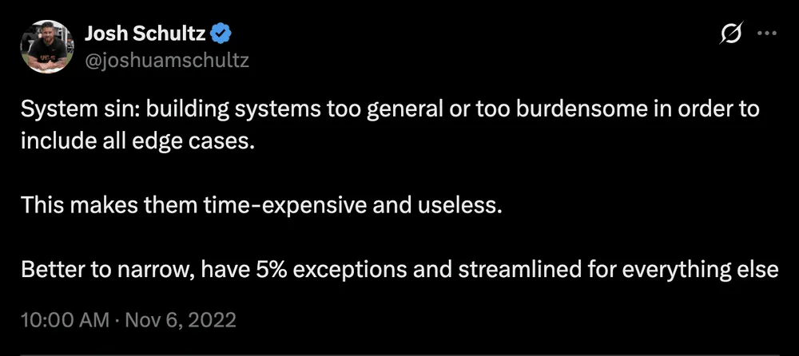

Most "processes" at property management companies aren't processes at all. They're a Word doc nobody's opened in a year, a laminated sheet from two reorgs ago, or a set of steps that only exist in one person's head. Usually the person who's about to go on vacation and hasn't told anyone what they do.
I was reminded of a live training session from a few years ago where I rebuilt one of our core checklists (new property onboarding) from scratch, live, in front of an audience, moving it from Process Street into Lead Simple. Narrating my own decisions out loud, in real time, forced me to articulate something I've mostly done on instinct for nine years running RL Property Management. Here's the actual list of principles I was working from, with the reasoning behind each one.
Scope It Before You Build It
Before you write a single step, you need to know what you're actually building and when it kicks off. Get this wrong and everything downstream is wasted effort.
Confirm you actually need a true process (vs. a reference document)
A lot of what lives in your knowledge base is reference material, meant to be consulted rather than run step-by-step. We keep a whole company wiki in Notion: policies, work instructions, reference material, email templates - and almost none of it is a process in the formal sense. Our master renter's insurance page, for example, is purely reference: coverage limits, sample policy, login info, the claims form. Nobody "runs" it. It just needs to be easy to find and always current. Save the real process-building (stages, task assignments, conditional logic) for things that actually move through steps with someone accountable at each one.
Get crystal clear on what triggers the process to start
When I sat down to rebuild our new client/property checklist in Lead Simple, the software's own recommendation stopped me: split it into two separate checklists, one for new clients and one for new properties. The trigger for each is genuinely different. A brand-new client signing on is one event. An existing client adding a second property is a completely different event that doesn't need any of the client-onboarding steps repeated. If you can't state the single trigger that kicks off a process in one sentence, you probably have two processes pretending to be one.
Don't overlap with another process
That same split does double duty: it keeps the two checklists from stepping on each other. Referral gifts, "is this a new client" logic, client-specific onboarding emails, all of that stays on the client side. The property checklist only handles what's true of the property. When steps live in the wrong process, people either do them twice or skip them because they assume someone else already did.
Start Ugly, Build Fast
Start with low-tech
We ran our new client/property checklist inside Process Street for roughly six years before I ever touched Lead Simple. Process Street is basically a Word doc you check boxes on — no integrations, no automation. That was fine. It did the one job it needed to do: make sure nothing got skipped. I only moved to something more powerful once there was a concrete reason (a direct Buildium integration), not because the old tool felt unsophisticated.
Just enough process (don't overengineer)
The temptation with a new process tool is to build every bell and whistle on day one: conditional logic, custom fields, automated emails, the works. My actual advice, live, mid-build, was the opposite. Get down the things you know you need for every property, in whatever form, and start running it. You'll think of a hundred improvements the moment real work starts flowing through it — improvements you'd never have guessed sitting in the builder beforehand.
Build for the common case, not the rare exceptions
Our onboarding checklist branches on exactly four questions: was the property just purchased, is it part of an HOA, is at least one unit occupied, is at least one unit vacant. That's it. Those four cover the overwhelming majority of what actually comes through the door. I didn't try to account for every edge case up front. The rare stuff gets handled manually when it shows up, not baked into the template.

Build in a few hours and deploy immediately. Capture the momentum.
I built out the entire skeleton of this process: stages, custom fields, task assignments, two email templates with mail-merge - all in about an hour, live. Then I immediately ran a test through it to see what actually showed up. Step through what you just built while it's still fresh, before you've lost the thread of why you made each decision.
Bend Toward The Tool, Not Away From It
Contort your business to the tools
I've been running a version of this checklist for nine years. My instinct would have been to rebuild the exact same structure inside the new software. Instead, when Lead Simple's own pattern conflicted with how I'd always done it, I took their structure. The tool you're adopting was usually built by people who've seen this problem play out across hundreds of companies. Don't assume your old structure is sacred just because it's familiar.
Use as few tools as possible, but no fewer
The entire reason I moved off Process Street was one integration: Lead Simple syncs directly with Buildium, which means every client, lease, and property already lives inside the process tool. That's worth a migration. Adding a new tool because it's "more powerful," without a concrete reason like that, is usually just more surface area to maintain.
Don't manually enter data at runtime if you'd only use it once
In Process Street, every single checklist run started with someone typing in the client's name, email, and the property address by hand. In Lead Simple, because of the Buildium sync, you select the client and property from a list and everything populates automatically. That one change alone eliminated an entire section of manual data entry that existed purely because the old tool couldn't talk to anything else.
Minimize (but don't eliminate) conditional logic
Those four custom fields (purchased, HOA, occupied, vacant) each show or hide entire blocks of steps depending on the answer. It's genuinely powerful. It's also the first thing I'd tell someone starting out to ignore. Conditional logic is a layer you add once the basic checklist is running and you understand where it actually branches, not something to design from a blank page.
Design For The Human Running It
Standardize terminology, punctuation, and verb tense
Small thing, but it compounds: if half your steps read "Send welcome email" and the other half read "Welcome email should be sent to the client," people start skimming past instructions instead of reading them. Pick a format (I use imperative, present tense) and hold every step to it.
Put the HOW where the WHERE is (self-documenting)
Every step should carry its own instructions, not point to a separate doc somewhere else. In the Lead Simple checklist, the "add property to Buildium" step has a Loom video embedded directly in it: click, watch, done, no new tab. Our Notion wiki works the same way: there's no separate edit mode, so if someone spots an outdated instruction while they're actually doing the task, they can fix it on the spot instead of filing it away as a someday-task.
Make it easy and fast to start the process
Watch for friction at the very first step. When I tested our new onboarding checklist, the tool wanted me to select an existing property before I could even begin — except a brand-new property, by definition, isn't in the system yet. I restructured the first step to add the property to Buildium first, then attach it to the process, so the very first thing a new user hits isn't a dead end.
Eliminate and re-order steps at every opportunity
Rebuilding this checklist from scratch was also a chance to prune it. Steps that belonged to client onboarding, not property onboarding, got cut outright. "Property entered in Buildium," which used to sit buried in the middle of the old checklist, moved to the very first step, because nothing else in the process works until that's done. Every time you touch a process, ask what can be deleted or moved before you ask what should be added.
Get The Team Bought In, Then Keep Iterating
Involve the right team members throughout
When I set up access for this process, I gave it to the whole team, except our sales rep, who has no reason to touch it. For specific steps, you can assign a task to a specific person rather than defaulting everything to whoever kicked off the checklist. If one person always handles funds requests, assign it to them directly instead of hoping it lands on the right desk.
Enforce a culture of daily task completion
A process is only as good as your visibility into whether it's actually moving. Lead Simple's overview showed me a batch of lease-ending checklists, several with tasks overdue by a full week. That's the moment you go find out why someone's stuck — the tool just makes the stall visible instead of letting it hide in someone's inbox. I used that exact view to catch a security deposit disposition that had stalled out on my team.
Improvements should be incremental, and process depreciation is real — you're never "done"
Our new client/property checklist has been revised hundreds of times over nine years. Our Notion wiki works the same way: whoever actually does a task becomes the person responsible for keeping the instructions for it current, so it never calcifies into a dusty binder nobody trusts. Neither of these is a one-time build. They're living documents that degrade the moment you stop touching them.
The Bottom Line
None of this is complicated, and that's sort of the point. Building a process people actually use isn't about picking the fanciest software or designing the perfect flowchart before anyone's touched it. It's mostly restraint: scope it tight, start bare-bones, run it immediately, and fix what breaks. Do that consistently and the process gets better every single week, without you ever declaring it finished.
Full replay of the live build: [LINK]